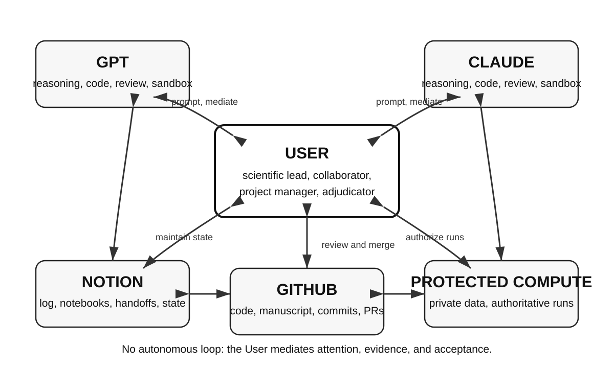

This manuscript was automatically generated by Manubot on August 16, 2026 from the public repository TaylorResearchLab/beyond-the-chat-window.
Correspondence is available through GitHub Issues.
Scientific projects often continue across many chat sessions, repositories, and computing environments. I retrospectively examined a workflow in which a human investigator, called the User, coordinated GPT and Claude through a structured Notion workspace linked to GitHub and a Manubot manuscript repository. The assistants had no direct message channel; they communicated asynchronously through the User-mediated shared record. The User decided when each should read and respond to the shared record and retained authority over protected computing, acceptance, merge, and release. The frozen dataset contained 728 records from seven standardized Collaboration Logs across six active workspaces. Both platforms produced accepted work as task leads and reviewers, and both corrected the other. The record also documented failures, including work left outside the log, incomplete storage of code and outputs, invalid checksums, unsupported assertions, citation-validation errors, and avoidable process delays. Compared with isolated chats, the workflow provided a persistent record of decisions, evidence, files, and handoffs. As projects divided into linked workstreams, relevant context could be present in that record yet remain unused until the User redirected an assistant to it. The User therefore remained responsible for selecting and integrating project-wide context. This single-user descriptive study has no control condition and does not compare model performance or establish that the workflow is superior to alternatives. The manuscript itself was prepared with the same workflow.
Scientific work is difficult to execute and track inside isolated chat sessions. A project may continue for months, span many separate conversations, draw on several repositories, and depend on data that cannot leave a protected computing environment. Most chat interfaces are organized around individual conversations rather than long-lived projects. They do not reliably preserve project state across sessions, which invites drift; record why a decision was made; or maintain the identity and provenance of the data, code, and files behind a result. These limitations also make it difficult to incorporate AI contributions into research records intended to support Findable, Accessible, Interoperable, and Reusable (FAIR) practices [1].
Scientific complexity compounds this problem. Research projects rarely proceed as one sequence of tasks. They commonly test several linked hypotheses at different analytical levels while data preparation, code development, validation, interpretation, and writing proceed in parallel. The relevant state becomes distributed across conversations, notebooks, repository branches, files, and computing environments. Information may be available somewhere in the project without being retrieved or applied by the assistant working on the immediate task.
Across the projects examined here, large language models contributed to scientific reasoning, project management, literature retrieval and summarization, code and script development, review, manuscript editing, and maintenance of structured project records. The practical problem examined in this study is therefore not whether models can contribute, but how to make their contributions persistent, reviewable, attributable, and usable across the life of a scientific project.
Using a single model for both project production and review raised three design concerns. First, a fluent but incorrect assumption or answer from an AI may escape detection, particularly when it concerns a subject outside the User’s primary expertise or when verification is difficult. Second, performance may vary across tasks, so a platform that performs well in code development may be less reliable for a specialized scientific judgment, or vice versa. Third, asking a model to review its own work does not guarantee an independent check, because the review may reproduce assumptions or failure modes present in the original response. A second session of the same model provides a fresh context but may still share the same training, system design, and characteristic errors. These concerns motivated the use of a second platform from a different provider. The present study did not test whether that choice performs better than using two named sessions from the same provider.
Multi-agent frameworks address coordination through a programmed orchestration layer that connects model agents, tools, and, in some systems, human input under predefined roles, objectives, permissions, interaction rules, and stopping conditions [2,3,4]. This study examines a different arrangement. No programmed orchestration layer scheduled or routed the participants. The User directed each transition through the shared record and remained responsible for the scientific process.
The User established a work contract defining project objectives, participant roles, evidence rules, logging requirements, and conditions for review and acceptance. The User initiated and guided the ongoing scientific workflow. The User also utilized a structured Collaboration Log in Notion, a commercial workspace application. ChatGPT, referred to here as GPT, and Claude are commercial AI assistants supplied by different providers. The User prompted each platform to read and respond to the other platform’s entries and work products asynchronously through the shared record. They addressed the User and one another directly, challenged conclusions, and revised their own positions in response. Neither assistant read the record unprompted. The User initiated every transition, often with a short synchronization instruction. When the relevant project state was already recorded, a prompt as brief as “Check the log” was frequently sufficient.
The use of platforms from different providers was intended to diversify model-specific assumptions and failure modes, not to guarantee independence. Whether this design provides an advantage over two sessions from one provider remains an open empirical question.
The User’s role was not limited to occasional approval. Existing taxonomies of human-AI interaction distinguish arrangements in which AI proposals require mandatory human approval from those in which an autonomous system escalates when uncertain [5]. The workflow reported here extends beyond an approval gate. The User formulates and revises the scientific question, designates project roles, assigns tasks, determines which participant acts next, controls which records, files, and computing resources each participant may access, reviews evidence, resolves disputes, and retains authority over scope, private data, final runs in protected computing environments, acceptance, merge, and release. The workflows in each project were therefore human-governed and User-mediated rather than autonomous.
In the projects studied, this User-governed model proved necessary because the complexity of discovery-driven research exceeded the practical memory horizon of any single chat-based AI session. Current AI systems could execute substantial bounded tasks, but they did not reliably maintain or retrieve the distributed context needed to coordinate a complex scientific project as a whole. The human therefore had to sustain the memory-intensive project coordination that connected hypotheses, datasets, code, validation results, prior decisions, milestones, and parallel workstreams. In this implementation, removing that human integrative role would not have produced an autonomous version of the same workflow. It would have allowed the projects to fragment and lose direction.
This requirement is especially important because discovery-driven scientific projects rarely proceed according to a fixed plan. Each substantive result may alter the hypothesis space, invalidate an assumption, reveal a technical limitation, change the interpretation of earlier findings, or create a new branch of investigation. As discoveries and limitations unfold, project management requires regular, and often frequent, project-wide reassessment of tasks, milestones, dependencies, priorities, and objectives rather than execution of a predetermined sequence. The human role was therefore not simply to restore missing context, but to recognize when new information required a project-wide change in priorities or strategy, decide how the project should change, and determine how those changes should alter the roles, assignments, and participation of the AI collaborators. In discovery-driven research, project management is itself an iterative scientific activity.
This degree of human involvement required active coordination rather than occasional approval. It was a deliberate governance choice that kept scientific direction, project-wide context integration, evidence evaluation, and responsibility for the released research product under human control.
The study had five objectives: to describe the workflow and its governance and evidence rules; characterize a frozen retrospective record of its use; assess how the workflow, shared records, and resulting research products supported the Findable, Accessible, Interoperable, and Reusable principles and where that support remained incomplete; report the collaboration patterns and operational failures observed; and document the practical tooling constraints encountered. The FAIR assessment was a descriptive appraisal of documented workflow features and failures, not a formal certification of FAIR compliance. This is a descriptive, single-investigator study. It does not test causal benefit, compare platform performance, or establish superiority over other collaboration methods.
Blackboard architectures provide the closest systems precedent for this workflow. In these systems, several specialized components contribute to a shared workspace, while a control process decides which component should act next. Hearsay-II established this arrangement [6], and Nii later described the blackboard model as a general framework for problem solving [7].
The workflow reported here uses the same broad arrangement. Notion holds the shared project record, GPT and Claude contribute analyses, code, or other files, and the User decides what should happen next and whether a contribution is accepted. The contribution is not a new blackboard architecture. It is the use of this established pattern across separate commercial services that do not share memory, context, a message channel, or a computing environment. A person replaces the automated scheduler, and an ordinary productivity database replaces an internal program data structure.
Contemporary multi-agent frameworks coordinate models, tools, and sometimes human input within a programmed orchestration layer [2,3,4]. Their interaction logic is specified in software even when humans participate. The present workflow used no automated scheduler or programmatic agent-to-agent loop; the User directed each transition through the shared record. Recent systems extend programmed orchestration toward semi-autonomous scientific discovery [8] and specialized scientific data workflows [9]. Manubot supplied the versioned manuscript and automated build process used to prepare this paper [10].
The workflow separated coordination, versioned files, and final execution.
| Function | Location | Authority |
|---|---|---|
| Coordination and current project state | Notion Collaboration Log, numbered notebooks, and pages identifying the current accepted state | Either platform could propose; the User accepted, rejected, or returned work for revision |
| Versioned files | GitHub code, configuration, tests, manuscript source, branches, commits, pull requests, and automated builds | AI sessions proposed or reviewed changes; in most scientific projects, the User controlled file transfer, staging, commits, pushes, pull requests, merge, and release |
| Final execution | User-controlled computing environment containing private data | The User authorized and performed the run |

The User controlled every shift in work between GPT and Claude. Neither assistant had direct access to the protected computing environment. Both could read and write the shared Notion record. Repository access varied by platform and session. It included public read access and, when needed, an integration limited to the selected repository and authenticated under User control.
The User did not alternate evenly between GPT and Claude. Coordination was task-dependent and often asymmetric over a given period. When one platform was working through a particularly complex task, the User might prompt that session repeatedly, and the active session could add several incremental entries to the Collaboration Log as the analysis, code, or decision developed. The other platform might not be reintroduced until the task or a coherent work unit was complete, at which point it could review, challenge, reproduce, repair, or extend the accumulated work. The workflow therefore consisted of User-directed periods of concentrated work followed by selective reciprocal review, rather than a fixed turn-taking dialogue. Counts of prompts, chat turns, or log entries should consequently not be interpreted as equal exposure, equal contribution, or comparative performance.
The implementation used paid Pro subscriptions for ChatGPT and Claude and a Business subscription for Notion. Routine coordination used the interactive products rather than model APIs. The study did not test whether the same workflow could be reproduced with lower-cost plans or with open-source solutions using the same workflow structure.
Product plans, model identities, client builds, and connector versions were reported separately because these components are versioned independently.
| Component | Manuscript-production configuration | Scope and limitation |
|---|---|---|
| ChatGPT | Pro interactive application; GPT-5.6 Pro | Current GPT manuscript-development session. Historical GPT model identity was not systematically recorded for each corpus record. |
| Claude | Pro interactive application; Claude Opus 5 (claude-opus-5) |
Current Claude manuscript-development session. Historical Claude model identity was not recoverable for each corpus record. |
| Notion interface | Business workspace; Version 7.30.0 (29d6ecb) | User-observed interface build during the final manuscript phase. |
| GPT Notion integration | Remote Notion connector | Exact connector build and Notion-Version header were not exposed. |
| Claude Notion integration | Notion connector in Claude | Exact connector build and API-version header were not recorded or exposed. |
These configurations describe the manuscript-development phase, not the entire frozen corpus. The corpus spans multiple model releases, and the Collaboration Log schema did not record model version for each action. Model selection could also change within a conversation, while platform routing was not independently observable. Historical records were therefore not assigned to specific model versions unless a version was explicitly documented at the time.
The Collaboration Log was a structured database rather than a transcript. Each record identified its source, owner, type, status, requested reviewer, and next action. Records could also link to a repository, commit, command, input, output, or notebook page. Incorrect or obsolete work was marked superseded rather than silently removed when its history remained relevant. For some new workspaces, the User used Notion AI to recreate the established log template and then checked the resulting fields.
A handoff recorded the current accepted state, the files and commits that governed, unresolved questions, known limitations, and one explicit next task. A new session first read the handoff and its linked records. When that material was complete, the User could synchronize the session with the instruction “Check the log.”
Notion and GitHub served different but linked purposes. Notion held the scientific and managerial state of the project: the purpose of a task, relevant prior decisions, assignments, review requests, approvals, unresolved questions, evidence summaries, handoffs, and next actions. GitHub held the versioned artifact state: source code, configuration files, tests, documentation, branches, pull-request differences, commit history, and releasable files. Private data and final scientific execution remained in User-controlled computing environments.
In most scientifically high-value projects, the User retained direct control of the GitHub repository. The AI participants could inspect code supplied by the User, propose code or patches, recommend commands and tests, review differences, interpret outputs, and help maintain the provenance record. They did not ordinarily control repository staging, commits, pushes, or merge. Repository write access through an AI connector was used only in bounded exceptions, including parts of manuscript production.
The dominant workflow proceeded as follows:
The Git commit identifier and the SHA-256 checksum served related but distinct provenance functions. A commit SHA identified a particular state of the versioned repository. A SHA-256 checksum identified the exact bytes of a completed output file, source bundle, or release archive that might be stored outside GitHub. Notion linked these identifiers to the scientific purpose, command, environment, result, review history, and next action.
This arrangement made the User the bridge between project state, artifact state, and execution evidence. Notion recorded why the work was undertaken, which evidence was accepted, who reviewed it, and what should happen next. GitHub recorded the exact source state and changes. The protected environment produced the authoritative scientific result. AI participants assisted with development, review, interpretation, and process tracking, while the User retained control of file transfer, testing, execution, repository custody, merge, and release.
In a minority of bounded cases, an AI session wrote to a branch through a repository-scoped integration authenticated under User control. These actions were treated as exceptions and were recorded explicitly in Notion because GitHub metadata attributed both connector-initiated and manually initiated actions to the same User identity.
The workflow distinguished proposals from evidence and from accepted results. Model text was treated as a proposal or interpretation. A sandbox, meaning an isolated test environment supplied by a platform, showed that code worked only with the recorded code and inputs in that environment. A commit identified a version of a file or output but did not establish scientific correctness. A run performed by the User in the protected environment was authoritative only for the recorded code, command, inputs, configuration, and environment.
The User decided whether the combined evidence satisfied the relevant acceptance criteria. Agreement between the assistants did not replace verification, and agreement after one assistant had seen the other’s work was not treated as independent confirmation.
A reusable work contract defined participant roles, where outputs had to be stored, the evidence required for acceptance, logging duties, handoff conditions, citation validation, and dispute resolution. RULE ONE required every scholarly reference to be checked against a primary publication record before merge. The check included both bibliographic identity and whether the source supported the sentence that cited it.
Two controls were added after observed failures. The file-and-output rule required code, inputs, commands, and results to be stored together or linked from the same record. The read-back rule required every created or moved record to be fetched again and checked separately for the intended parent and for preservation of its structured properties.
The current Collaboration Log also separates temporary review requests from durable approval positions. A reviewer clears only their own review flag after recording the review. Agent approvals record positions rather than votes; the User alone determines whether work enters accepted state. These fields were added after the retrospective corpus was frozen and therefore do not repair missing review history in the analyzed records.
A completed synthetic work contract, reusable compact template, example log record, and example structured handoff are provided in Supplementary Note S1.
This was a retrospective case study of one User coordinating GPT and Claude across several private workspaces that used the same Collaboration Log design. The analysis used a frozen snapshot defined by a fixed analytical cutoff established before extraction. The snapshot contained 728 records from seven standardized logs across six active workspaces. Freezing the snapshot defined the analytical corpus; it did not imply that the underlying projects were complete.
Logs with substantially different structures were retained for qualitative description but excluded from the total. The manuscript-development log was also excluded from that frozen count because it was created after the study boundary and is discussed separately as a reflexive case.
To protect private work and collaborators, the paper reports collaboration functions rather than scientific domains or project-specific counts. These functions included code development and review, management of project state, literature retrieval and citation checking, structured coding and analysis review, figure regeneration, independent recalculation, and consistency tracking for a long-form writing project.
The present analysis used the structured Collaboration Logs and did not include synchronized exports of the underlying chat sessions. We therefore did not estimate review-routing rates, response times, or the frequency of agreement, disagreement, correction, and retraction. These measures could be reconstructed in a separate analysis by aligning timestamped chat turns with Collaboration Log records. Such a reconstruction would capture the visible conversation and recorded tool use, although hidden platform context and unrecorded interface state might remain unavailable.
The study was not designed to estimate comparative performance or synergy between the platforms. Because tasks were assigned by the User rather than randomized or matched across platforms, neither the structured logs nor a reconstructed chat corpus would by themselves support a causal comparison of GPT and Claude performance.
No project-specific scientific findings are reported.
The FAIR principles were developed for digital research objects rather than for human-AI work processes [1]. We therefore assessed how the workflow, shared records, and linked research products supported FAIR-oriented practice and where that support remained incomplete. We did not claim formal FAIR compliance, assign a FAIR maturity score, or evaluate the private scientific datasets themselves.
The assessment covered the standardized Collaboration Logs, numbered notebooks, pages identifying the current accepted state, structured handoffs, repository links, commit identifiers, code and configuration records, run records, citation-validation records, and recorded artifact locations within the frozen corpus. The manuscript-development log was assessed separately as a reflexive case because it was created after the frozen study boundary.
For each FAIR dimension, documented features and failures were mapped to the following criteria:
A feature was treated as supporting a FAIR dimension only when the relevant record or linked object was present and retrievable. Planned features without a documented instance were not counted as evidence. Missing entries; broken or inaccessible links; incomplete storage or transfer of files; missing code or commands needed to reproduce a result; invalid checksums; and limitations of the available tools were treated as evidence of incomplete support. The results are presented as a descriptive matrix rather than as a numerical score or certification.
The frozen record supported four qualitative observations.
Roles changed by task. GPT and Claude each led some tasks and reviewed work produced by the other. Both produced contributions that the User accepted in each role. The User did not identify one platform as consistently better across task types and treated their contributions as complementary. Because the User assigned tasks rather than randomizing them, this judgment is an observation from one case, not a controlled performance comparison.
Corrections occurred in both directions. Each platform identified errors in the other’s work, and each later withdrew or revised some of its own claims. The exchanges remained courteous even when the participants disagreed. Courteous wording therefore did not imply agreement: the durable record contained direct criticism, retractions, repairs, and User adjudication.
The shared record supported continuity but required active management. Handoffs, accepted decisions, and links to current files allowed a new session to resume without reconstructing the project from old chat messages. The record did not maintain itself. The User continued to route reviews, identify the current accepted state, resolve competing proposals, and prompt the participants to record missing work.
An effective project-memory horizon required User-directed context integration. We use effective project-memory horizon as a descriptive term for the portion of distributed project state that a session retains or deliberately retrieves and applies to a particular task. It does not refer simply to the amount of information technically stored in the workspace or to the nominal size of the model’s context window. The work contract, handoffs, and repeated guidance improved local continuity, but neither assistant reliably maintained the entire project as an active model while also completing a narrowly defined task. As projects accumulated linked hypotheses, datasets, code branches, validation results, literature, and writing decisions, relevant information became distributed across chat sessions, Collaboration Log records, notebooks, repositories, data summaries, and platform-specific sandboxes. Information could therefore be present and accessible within the project yet remain absent from a response because the current session did not identify it as relevant to the immediate assignment.
This limitation made project-level gaps more likely to be recognized reactively than proactively. An assistant could perform a local task competently while overlooking an upstream decision or parallel result that materially changed how that task should be interpreted. For example, an assistant might revise code correctly from the files placed before it while failing to retrieve an earlier notebook that fixed the canonical input definition, or a separate review record that had changed the acceptance criteria. The local work could appear internally consistent until the User recognized the missing dependency and directed the assistant to reread the relevant notebook, log entry, commit, or output.
The User therefore performed a project-wide integration function that was not supplied by any individual AI session. The User periodically reassessed the broader project, detected missing dependencies or neglected workstreams, and selected the context that had to be restored before work could continue. This did not mean that the User retained every detail without external support. The User also relied on the Collaboration Log, notebooks, and repositories. The difference was that the User maintained continuing responsibility for deciding which parts of that distributed record mattered to the current scientific question and when they had to be reintroduced.
Requiring an assistant to reread the entire project before every local task would not solve the problem efficiently. It would increase time and computational cost, introduce large amounts of irrelevant material, and could weaken focus on the immediate assignment. The practical solution was selective context assembly: the durable record stored project memory, the User identified the task-relevant subset and its upstream dependencies, and the assistant worked within that User-assigned bounded context.
During preparation of this manuscript, for example, the Introduction cited a human-AI taxonomy source while the separate reciprocal citation-audit record still stated that the source was unused. Both records were available within the project, but the inconsistency became visible only when the project was reconciled across workstreams. The problem was not missing storage but failure to assemble the relevant information at the same time.
The workflow provided documented support for each FAIR dimension, but that support was incomplete and depended on active maintenance of the shared record.
| FAIR dimension | Documented support | Evidence of incomplete support |
|---|---|---|
| Findable | Searchable record fields, pages identifying current accepted state, structured handoffs, repository links, and commit identifiers made current work easier to locate across sessions. | Some decisions and analyses remained only in chat until the User requested that they be logged. Records created outside the intended database could remain reachable by URL while being absent from database queries. Temporary review fields did not preserve a complete history of completed reviews. |
| Accessible | Records stated where code, files, outputs, and supporting documentation were stored. Permissioned workspaces allowed shared records to be retrieved while private data remained in User-controlled computing environments. | Files left inside one platform’s chat or sandbox were unavailable to the other platform. Material files had to be transferred deliberately to Notion, GitHub, or another shared location. The available Notion configuration did not provide a general bulk-export or cross-database analysis path. |
| Interoperable | Repeated machine-readable fields and stable identifiers connected Notion records to repositories, commits, configurations, and outputs. The shared schema allowed GPT, Claude, and the User to interpret the same records across separate platforms. | Some specialized logs used substantially different schemas and could not be included in the standardized quantitative corpus. Interoperability was operational within the workflow rather than full semantic interoperability with external research systems, and it depended on proprietary services and connectors. |
| Reusable | Records could preserve rationale, code, commands, inputs, outputs, environment information, limitations, review history, citation validation, and supersession. Repository commits identified exact versions, and structured handoffs recorded what governed and what should happen next. | Some records initially omitted the code or query that generated a result, included an invalid checksum, or referred to files that had not been transferred to a shared location. Repository metadata alone could not distinguish an agent-initiated action from a manual User action performed through the same authenticated identity. |
The strongest support occurred when structured records linked claims to exact repository revisions, commands, inputs, and outputs. The weakest support occurred when work remained only in chat, files were not transferred to a shared location, or records omitted the materials needed to reproduce or evaluate a result. The workflow therefore supported FAIR-oriented research practice, but a structured workspace did not by itself make the work or its products FAIR.
The workflow used explicit controls for eight recurring problems.
| Observed problem | Control used in the workflow |
|---|---|
| A new session did not know the current project state | Pages identifying the accepted state and structured handoff records |
| A confident statement had not been checked | Evidence requirements; model confidence alone could not satisfy an acceptance criterion |
| Agreement between platforms was mistaken for independent confirmation | Agreement after prior exchange was recorded as sequential rather than independent |
| The shared record and the stored file no longer matched | The same log entry recorded the artifact location and exact commit SHA |
| A material decision remained only in chat | The work contract required material decisions and outputs to be logged |
| A result was stored without the code, inputs, or command needed to check it | The work contract required supporting materials and results to be stored together or linked from one record |
| A Notion create or move appeared successful but produced the wrong state | The created or moved record was fetched again and checked for location and retained properties |
| Mutable fields changed before retrospective analysis | The corpus was exported and frozen before measurement |
Five configuration- and time-specific limitations affected the implementation. The User worked in Notion Business UI version 7.30.0 (29d6ecb), while GPT and Claude used separate Notion integrations whose exact connector builds and API-version headers were not exposed or recorded. These observations describe the tested configuration and study period and may not apply to later releases or other integrations.
A successful Notion response did not prove that the intended change had occurred. In two cases, creating a page without an explicit parent placed it outside the intended database. The page could still be opened by URL but did not appear in database queries. Moving a page into the database could then remove its structured properties. For this reason, every create or move was followed by a second read that checked both the page location and its retained properties.
Editing long or structurally complex Notion pages required small, verified changes. Broad replacements depended on exact text anchors and could interact with safeguards protecting child pages or databases. Targeted edits often worked, but each edit had to be read back. Appending a dated section or creating a versioned successor page was sometimes safer than rewriting a large page in place.
The available Notion setup was not a general file-transfer or bulk-export system. Query results were returned into the model’s working context rather than directly to a file, and cross-database aggregation was not available under the Business plan used in this study. A file left inside one platform’s chat or sandbox was not available to the other platform. Material files therefore had to be uploaded to Notion, committed to GitHub, or placed in another shared location and then opened by the receiving participant.
Review requests were temporary fields rather than a permanent history. Clearing a review checkbox removed the only structured indication that the review had been requested. The retrospective dataset therefore undercounts completed reviews by an unknown amount. After the dataset was frozen, the working schema was revised to separate temporary review requests from durable approval fields, while the dated review text remained the historical evidence.
GitHub metadata did not show who initiated an action performed through a User-authenticated integration. A connector-initiated commit and a manual User push received the same repository attribution. The Collaboration Log was therefore needed to record whether GPT, Claude, or the User initiated a repository action. That record remains dependent on accurate logging by the participants.
This manuscript was prepared with the workflow it describes, so its production provided an additional observed case. It was not included in the frozen 728-record dataset.
Several failures were recorded during preparation. An analysis was completed and reported in chat without being entered in the Collaboration Log. The first log entry for that analysis omitted the code and query that produced the result and included a checksum calculated before the file was complete. In another review sequence, three claims that could have been checked directly were stated without verification. A manuscript build was described as having validated citations and links before every target had been opened; one public link failed, and one real source was attached to a claim it did not support. A merge was also delayed after the agreed review requirements had already been met.
The other platform or the User identified each problem and required a correction. These events show that fluent explanations and successful software builds are not evidence that claims, citations, links, or files have been verified. They also show that a persistent record does not maintain itself. Participants must still add missing work, correct the record, and reconcile review status with the actual project state.
The workflow supported sustained work across separate AI platforms while keeping the User responsible for scientific direction, evidence, files, and acceptance. Its contribution is a practical method for coordination and record keeping, not an autonomous multi-agent system.
The AI contributions were modular rather than substitutive. GPT and Claude could perform substantial scientific, computational, review, and writing tasks, but no individual session maintained the complete project-wide scientific frame. The User connected results across workstreams, recognized omitted constraints, identified conflicts among local conclusions, and determined how each contribution affected the broader hypothesis structure and project trajectory. In this implementation, removing the User would not have produced an autonomous version of the same workflow. It would have removed the participant responsible for integrating distributed context.
Context availability alone did not solve the problem. In the systems studied, the limiting issue was not only finite context capacity, but the absence of a reliable project-level process for deciding which of many available records, hypotheses, and artifacts should be retrieved and integrated for a particular task. Information could be accessible in the shared record but not retrieved or used unless the User directed attention to it. At the same time, requiring every assistant to reread the entire project before every task would reduce efficiency and could weaken focus on the immediate assignment. The workflow therefore relied on selective context assembly. The User identified the current task, the governing project state, and the relevant upstream dependencies; the assistant then worked within that bounded context.
The User did not retain every project detail in unaided memory. The shared record functioned as external memory. The distinctive human role was to maintain a map of dependencies across hypotheses and workstreams and decide which portions of that external memory had to be brought together. In this single-user case, that process gave the User a broader effective project-memory horizon than any individual AI session. A larger nominal context window alone would not necessarily solve the problem if the system could not identify which project dependencies needed to be retrieved and reconciled. Loading the entire project indiscriminately could instead introduce irrelevant material and weaken task focus.
These observations do not establish that no future AI architecture could perform project-wide scientific integration. Replacing the User’s role would require a qualitatively different system with persistent cross-session memory, directed retrieval across heterogeneous stores, access-aware project management, hypothesis-level planning, detection of missing context, and accountable scientific judgment. Such a system was not evaluated here.
Direct model-to-model communication through APIs was deliberately outside the study design. The User did more than approve completed outputs. The User formulated and revised questions, supplied project context, chose which participant should act next, controlled when one platform saw the other’s work, authorized runs involving private data, interpreted evidence, resolved disagreements, and decided what entered the accepted project record. Automating these functions would have produced a different system.
This choice has costs as well as benefits. Manual coordination did not eliminate coordination work; it shifted that work to the User and required disciplined maintenance of the shared record. The retrospective study also cannot separate the value of human mediation from the value of having a durable record, because both were present together. Consumer chat products can change without the version control available for a fixed API configuration. Routine coordination used paid ChatGPT Pro, Claude Pro, and Notion Business subscriptions, and the study did not measure monetary cost or compare subscription use with token-billed APIs.
This is a retrospective study of one User with no control condition. There were no experimental groups, outcomes defined before data collection, or blinding. The study documents how the workflow was used, what it produced, and where it failed. It does not establish that the workflow outperforms an alternative.
Full chat histories were not included in the frozen corpus analyzed here. Consequently, this study does not report interaction-level routing, response-time, or agreement measures. Timestamped chat exports could be aligned with the Collaboration Logs in a subsequent analysis to reconstruct much of that sequence, including whether another participant’s response was visibly introduced before a review. Some hidden platform context and tool state might remain unavailable. Because exposure status was not captured prospectively, the present record cannot distinguish independent from sequential review in every case. Even procedural separation would not establish statistical independence between models.
Rejected proposals are under-recorded. Unpromising ideas were often abandoned in conversation rather than entered as rejected records. A rejection rate calculated from the log would therefore measure recording practice rather than the underlying frequency of rejection.
The study also did not compare two providers with two named sessions from a single provider. Any observed benefit may arise from the shared record, from the User’s coordination, from provider diversity, or from some combination of these factors.
The exact model identity was not recorded for every historical chat session. The configurations reported in Methods describe the manuscript-development phase and should not be assigned retrospectively to all 728 records. The Notion interface build was observed directly, but the exact connector builds and API-version headers were not exposed or recorded. These platform-specific observations should therefore be interpreted as applying to the tested configuration and study period.
The unit of replication is the User, not the record. Hundreds of records produced under one person’s direction remain one case. The workflow required substantial User time, three paid subscriptions, and continued attention to review routing, file custody, and log maintenance. Lower-cost product tiers were not evaluated, and product capabilities may change after the study period.
A prospective study should compare matched tasks under several conditions: one AI platform, multiple named sessions from one provider, the User-mediated two-provider workflow described here, and an automated workflow using model APIs. Assignments, prior exposure to another participant’s work, review events, corrections, and acceptance decisions should be recorded when they occur rather than reconstructed later.
Outcomes should be defined before data collection and should include detection of substantive defects, reproducibility of accepted results, time to an accepted result or file, number and importance of revisions, total User review time, token use, and monetary cost. Each review should be stored as a dated record that remains in the log after a temporary review checkbox is cleared.
A multi-investigator study would test a more difficult situation in which no single person holds continuous project memory, final authority, and access control. Such a design would require a written dispute process, explicit responsibility for maintaining the shared record, and a method for resolving conflicts among investigators as well as among model outputs.
Prospective measurement will itself add work. Future studies should therefore measure the burden created by their logging requirements and distinguish information that is essential for reproducibility from measurement requirements that interfere with active research.
This single-user case shows that a persistent shared record can support continuing work across separate AI platforms without transferring scientific authority to the models. The essential elements were clear human authority, a record of current project state, versioned storage of files, reciprocal review, explicit evidence requirements, and User-controlled acceptance. The assistants performed substantial local tasks, but the User still had to select and integrate context across hypotheses, records, repositories, and computing environments. The workflow improved continuity and made corrections easier to trace, but AI contributions remained modular rather than substitutive and the process remained dependent on active human judgment and project management.
The author thanks the Manubot developers for providing an open, versioned manuscript workflow. GPT and Claude were used as analysis, coding, review, and writing tools under human direction. They are not authors and had no authority over submission or publication.
Deanne M. Taylor: Conceptualization, Methodology, Investigation, Project administration, Supervision, Validation, Writing: original draft, Writing: review and editing.
Current manuscript-development sessions used GPT-5.6 Pro and Claude Opus 5 (claude-opus-5) for analyses, code review, manuscript drafts, and revision suggestions. Earlier project sessions used ChatGPT Pro and Claude Pro, but exact model identities were not systematically recorded for each historical action and are not assigned retrospectively to the full corpus. The human author directed the work, evaluated the evidence, resolved disagreements, approved all text, and accepts responsibility for the manuscript.
The public GitHub repository contains the manuscript source, build configuration, revision history, rendered outputs, citation-validation ledger, and Supplementary Note S1. The private Collaboration Logs and private project contents are not released. A sanitized Collaboration Log template with synthetic records is maintained as a companion Notion resource, and its public link will be recorded in the repository at release.